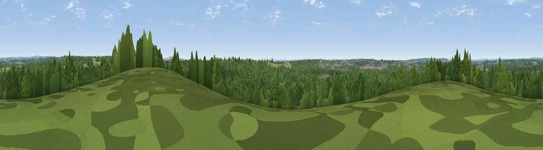

Viewpoint near Knowle
#44844 in England · top 91% of its area beats it · near Knowle · footpathWhere it is
The exact computed spot (SU 54575 10425). Click the marker for map links.
Public access: a public right of way passes within 14 m of this spot. Computed from Natural England's CRoW access layer and OpenStreetMap rights of way — not the legal definitive map. Always verify locally.
The view, rendered

A 360° render of this exact spot computed from the terrain model, tree cover and land cover — summer colours, afternoon light, calibrated against photographs of famous viewpoints. Real trees, hedges and buildings will differ in detail.
The panorama
Grey silhouette: terrain skyline in each direction (720 bearings, Earth curvature and refraction included). Dashed green: skyline with trees (+15 m) and buildings (+8 m) as obstacles. Blue strip: how far the ground is visible on each bearing.
Where the view opens
Wedge length = distance to the farthest visible ground on that bearing (vegetation-aware). Rings at 10, 25 and 50 km.
What fills the view
71% woodland · 21% grassland · 4% built-up · 3% cropland
Angular shares of the visible panorama (visual magnitude), not map area. Landscape diversity 0.36 (0–1 Shannon).
Key numbers
More beautiful places nearby
The staircase of upgrades: each row has a higher view potential than everything closer. Driving times are estimates from straight-line distance, calibrated against real road routing — check an actual route before setting out.
| Place | Direction | Drive | Score |
|---|---|---|---|
| Viewpoint near Knowle | SSE · 1 km | ~3 min | 19.6 |
| Viewpoint near Knowle | SSE · 1 km | ~4 min | 30.9 |
| Crockerhill | E · 3 km | ~8 min | 44.2 |
| Viewpoint near Droxford | NNE · 9 km | ~18 min | 58.5 |
| Viewpoint near Southwick | ESE · 10 km | ~19 min | 74.3 |
| Viewpoint near Southwick | ESE · 10 km | ~20 min | 76.6 |
| Viewpoint near Buriton | ENE · 20 km | ~34 min | 80.0 |
| Beacon Hill | ENE · 27 km | ~44 min | 85.8 |
50.89074, -1.22545 · source: screening · position refined by local search. Computed location — check access rights before visiting.